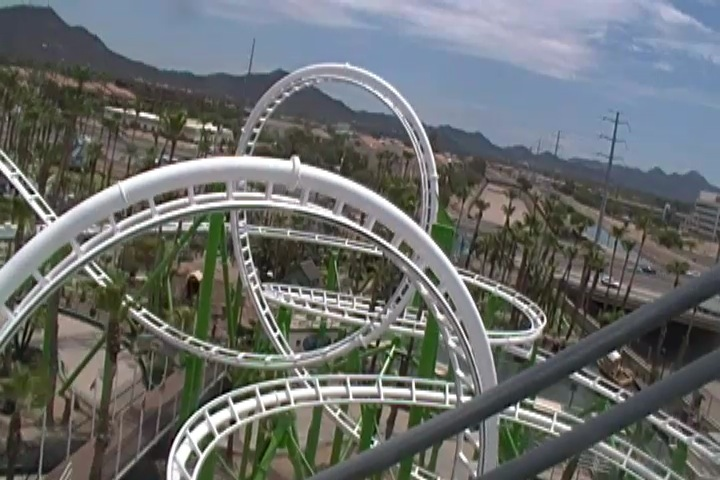
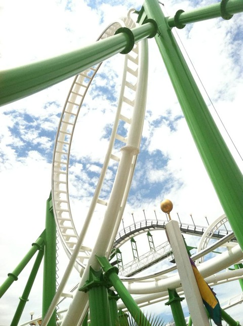
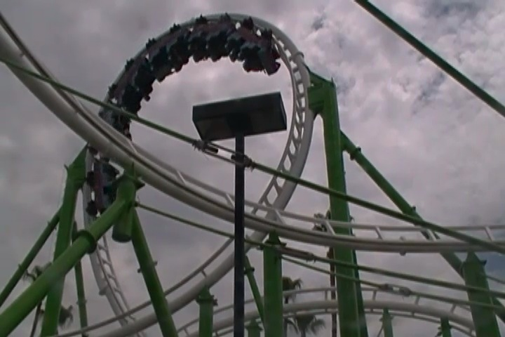
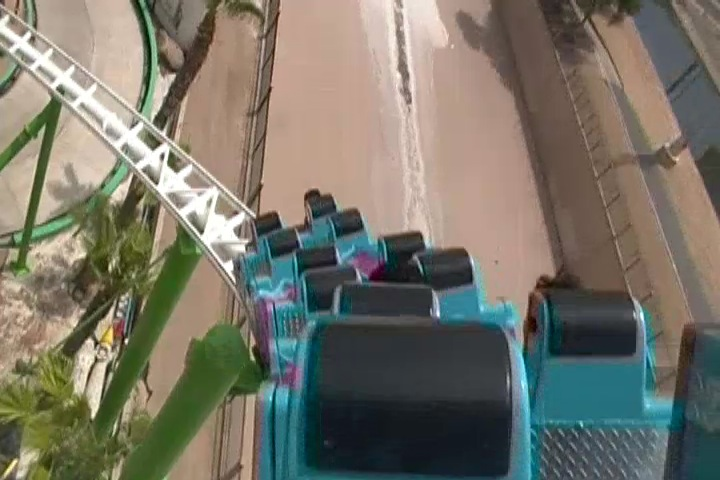

| |
Desert Storm Review

We're here at Castles'N'Coasters. Today's ride we'll be reviewing for you is Desert Storm, one of the few O.D Hopkins loopers in the world. And while Desert Storm is LIGHTYEARS than the attrocity that is Dragon, it is most certainly an interesting ride that certainly shows just how O.D Hopkins designs a roller coaster. Just looking at this ride, you'll quickly learn that there is something off about this ride. ESPECIALLY if you look at the loops. The loops do NOT look normal. They don't look normal in any way, shape, or form. They have this sort of weird, demented look to them. Like they were doodled by a kindergardener. Just look at them. Does it look like the loops have laterals? Yeah. That's not natural. So let's go ahead and ride. We hop in the trains, pull down the lap bars, and away we go. We climb the lifthill, get a clear view of Phoenix (there's no good view) before heading down the first drop. It's a small first drop, but it's fun. We curve down, just passing right over the go-karts. And then we head right into Loop #1. Now this is more normal of the two loops, but it's still pretty funky. And yeah. We get some rattling up in the loop. But hey. It's fun. We then head up a small hill, only to head down a small helix drop. And then we head into Loop #2. The funky loop. The f*cked up loop. This is the loop you gotta brace yourself for. Because just looking at this loop, you wonder what the hell the engineers were smoking to come up with a design like this. We head through the loop, and we get some LATERALS in the loop. Not just a little vibration, no. Honest to god, real f*cking laterals. Thank god the ride is lap bars only, because with OTSRs, my god. It would be so bad. Suddenly, I think I know just why Dragon is such a bad ride. But hey, with lap bars only, it's kind of fun. If not a bit freaky. It's certainly memorable. I'll give it that. We head into an upward helix, thread the funky loop, and lose some speed. Cause yeah. At this point, Desert Storm is mostly just going to be cruising. We pass the log flume, wave hello to the operator at P2, and dip back down before heading into another upward helix. And yeah. We just glide into the brake run. That was Desert Storm. A very strange roller coaster that has some loops that just defy all conventinal wisdom on how a loop is supposed to be. The fact that this ride has lap bars only is a real saving grace that allows you to enjoy the ride because it'd be BRUTAL with OTSRs. Not really a good coaster, but for a crappy Golf'N'Stuff park, it's a good fit. And let's be real. If you came and you're a coaster enthusiast, you came to ride this ride. Cha-Ching.
5/10
Location: Castles'N'Coasters
Opened: 1992
Built by: O.D Hopkins
Last Ridden: July 13, 2013
Desert Storm Photos




|